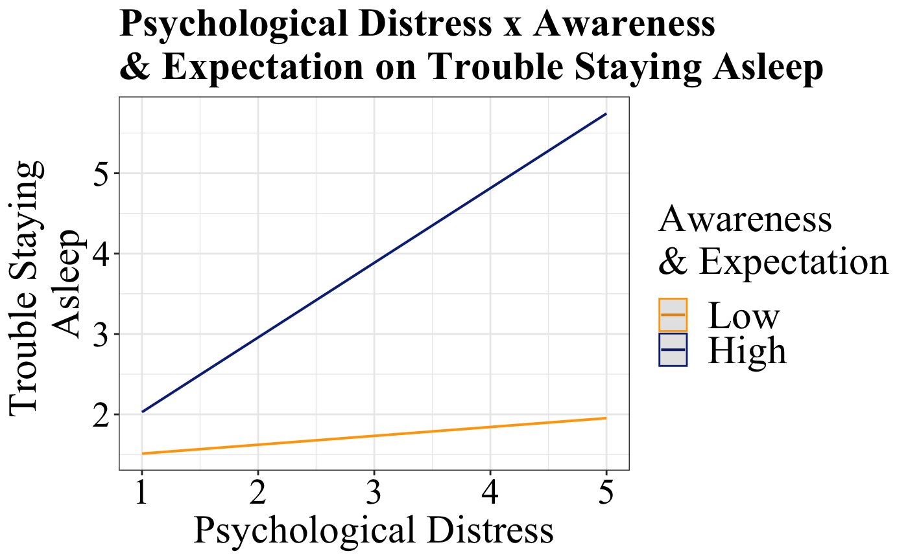

Psychological Distress & Sleep Disturbance: Anticipation of racism as an effect magnifier
Abstract
Sleep disturbance is an important predictor of racial disparities in health (e.g., hypertension, depression, ) with numerous studies showing greater sleep disturbance among African Americans compared to Whites. A strong body of evidence has linked psychosocial stress to poor sleep quality. Further, chronic racism-related stress has been linked with poor sleep, and may help explain racial disparities in sleep. The majority of studies examining the stress-health association focus on either the activation of or the recovery from a stress experience. A relatively unexplored component of the stress process is the anticipation of a stressor. Few studies have investigated the stress-health dynamics of state-based (vs. trait-based) anticipatory stress. Anticipatory stress, conceptualized as a chronic threat state, is a critically understudied perseverative cognitive-affective phenomenon involving worry (sustained awareness and concern of a potential threat) and protracted action preparation. Thus, anticipatory stress results in a heightened state of prolonged vigilance. Prior studies have proposed anticipatory stress as a critical yet understudied component of racism-related stress. We examined whether awareness/expectation of racism (one domain of anticipatory racism threat (aRT)), modifies the association between psychological distress (Kessler-6) and sleep disturbance among African American women. Data are from a nationally representative panel of 615 African American women ages 25-64. Data collection was from July-September 2016. Awareness/expectation of racism, psychological distress, and sleep disturbance were all measured on a 5-point scale with higher numbers indicating higher agreement on the construct of interest. We performed multivariable regression controlling for the remaining 4 aRT subscales, age, and employment. We found a significant interaction such that being high in awareness/expectation of racism (b = 0.20, SE = 0.10, p = 0.04, 95% CI[0.01, 0.40]) magnified the positive relationship between psychological distress and trouble sleeping. Our findings affirm the need to consider anticipatory racism threat as an important aspect of the racial stress experience among African-American women, potentially exacerbating the negative effects of stress activation on health.
